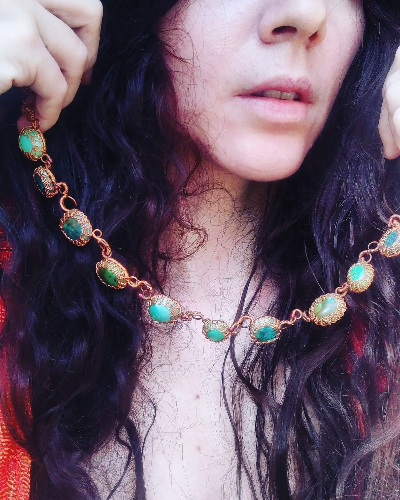
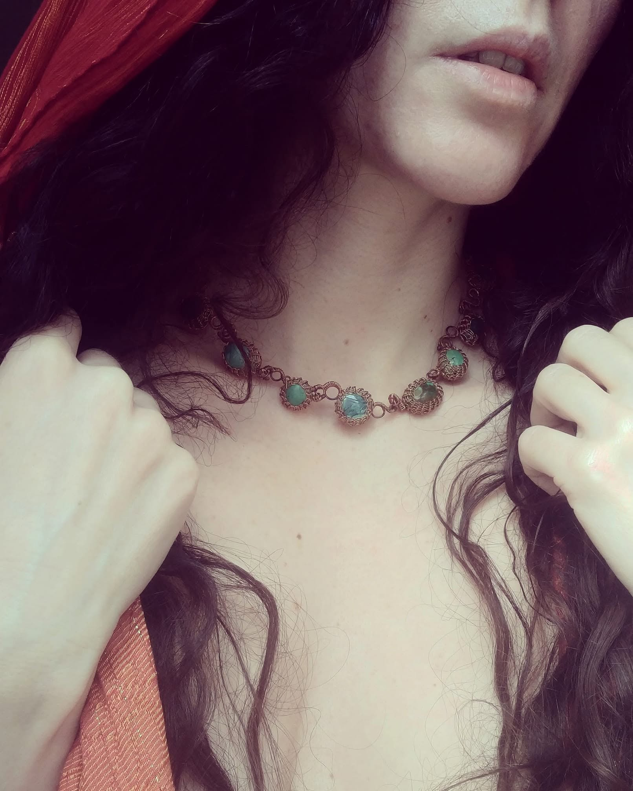

Orologiul apelor
The Clock of WatersDouăsprezece mări telurice, purtate la gât ca orele unui ceas ce nu măsoară timpul, cât dorul. Fiecare dintre cele 12 caboșoane de turcoaz este o mare zăvorâtă în rețeaua ei de cupru; un strop cât un ocean legănat de un legăn de sârmă țesută, matricea minerală care a ținut-o, amintirea de la o scăldă de lumină arămie dintr-un August etern.
Colier țesut manual, nod cu nod. Douăsprezece rețele, douăsprezece tăceri, un singur gest care nu va fi repetat niciodată. Lanțul care leagă mările e lucrat tot manual — fiecare verigă o respirație, fiecare închidere o pecete.
Material: Turcoaz natural, cupru
Tehnică: Teșere în rețeau (wire wrapping), lanț lucrat
manual
Închidere: Sistem lucrat manual
Lungime: Princess, aprox. 50 cm — se așează la baza
gâtului
Disponibilitate: Piesă unică